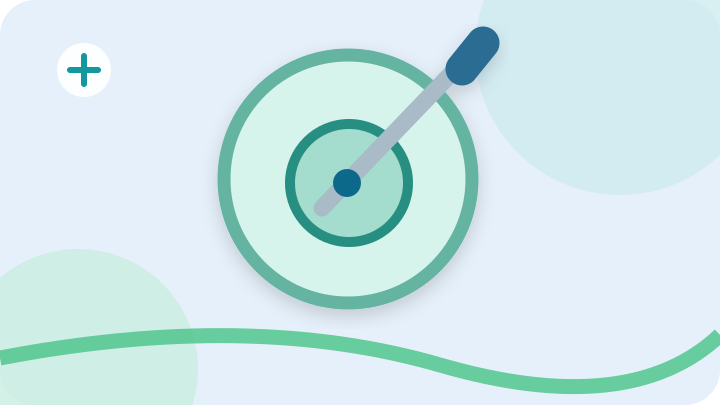
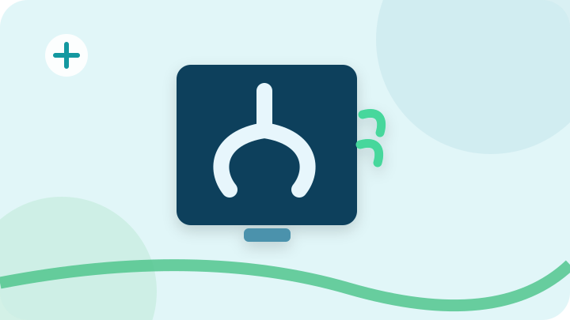
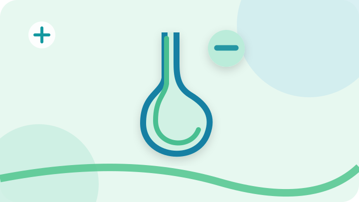

تصفح صفحات الخدمات بالتفصيل
صفحات مستقلة لكل قسم، مع شروحات الفحوصات والصور وإرشادات التحضير.
 الأشعة التلفزيونية (السونار)اكتشف الفحوصات ←
الأشعة التلفزيونية (السونار)اكتشف الفحوصات ← أشعة الدوبلر الملوناكتشف الفحوصات ←
أشعة الدوبلر الملوناكتشف الفحوصات ←
سحب الخزع والعيناتاكتشف الفحوصات ← تركيب القساطر وشفط السوائلاكتشف الفحوصات ←
تركيب القساطر وشفط السوائلاكتشف الفحوصات ←
أشعة الصبغة والفحوصات الخاصةاكتشف الفحوصات ←
فحوصات الباريوم للجهاز الهضمياكتشف الفحوصات ← تقييم الكتل والأورام بالسوناراكتشف الفحوصات ←
تقييم الكتل والأورام بالسوناراكتشف الفحوصات ←